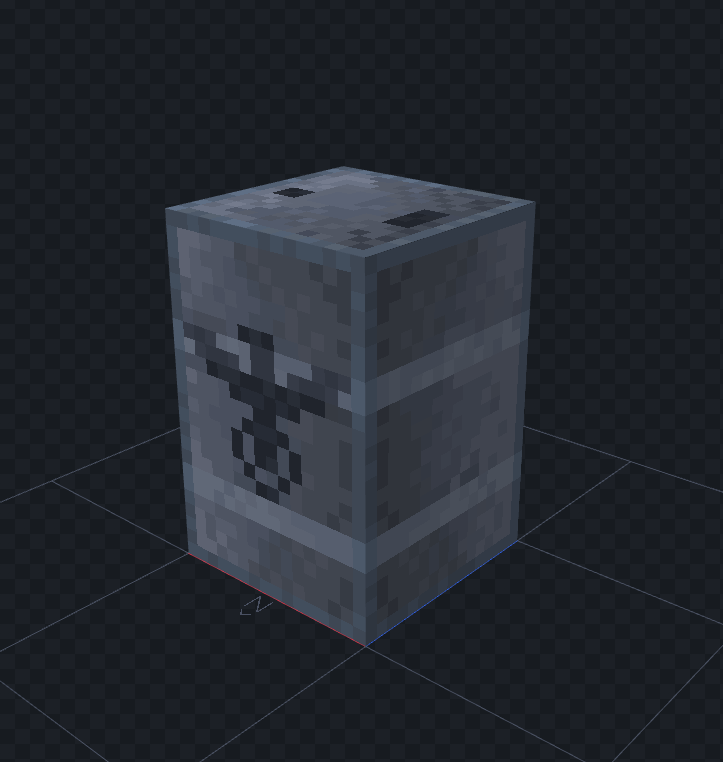
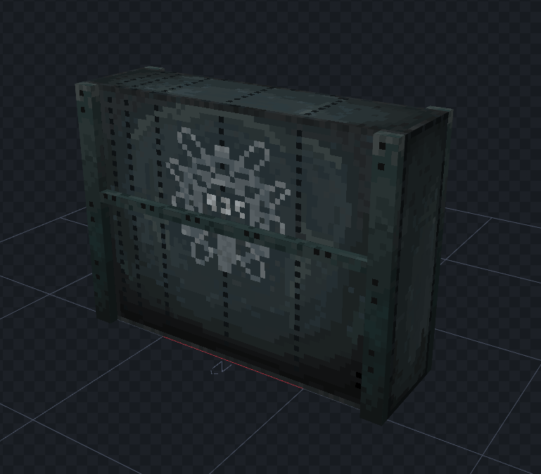
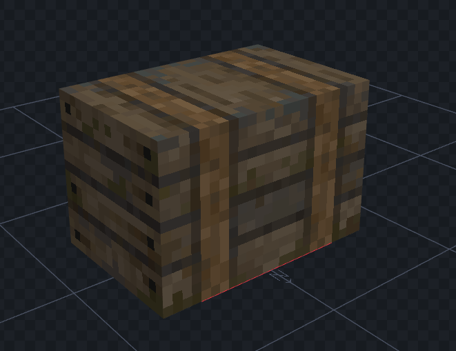

Zombiecraft 3D Generalist
Zombiecraft is a company that is creating a realistic zombie survival shooter inside minecraft. Using realistic fiction games as reference the artlead intended to create realistic looking pixelated models that follow Minecrafts base aesthetics. I worked as a 3D Generalist creating props and textures as needed for each of the maps.



